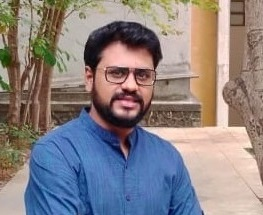
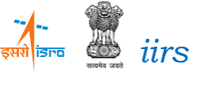

Dual correction of rainfall and root zone soil moisture estimates for improving streamflow simulations
2025 BibTeXVisweshwaran, R., Patil, A., & Ramsankaran, R. A. A. J.
ARC Geophysical Research, 1(1), https://doi.org/10.5149/ARC-GR.1662

Postdoctoral Researcher · Data Assimilation - Lead
Data Driven Computing in Civil Engineering (DCC)
RWTH Aachen University
Aachen, Germany, 52074
I am a hydrologist working on data-driven methods for environmental and water systems. My research combines hydrological and hydrodynamic modelling, data assimilation, GIS, and remote sensing with machine learning to improve forecasting.
I am currently a Postdoctoral Researcher and Data Assimilation Lead at the Data Driven Computing in Civil Engineering (DCC) group, RWTH Aachen University. Alongside this, I work as Lead Technical Consultant in Data Assimilation & Hydro-Hazard for Bhumi Zero-Carbon. Before Aachen, I was an NCEO fellow at the University of Reading, where I carried out the first state–parameter assimilation for the JULES land surface model using hybrid En-Var assimilation of COSMOS-UK soil moisture observations. I also assimilated streamflow into CaMa-Flood to improve UK flood inundation forecasts.
I hold a PhD in Remote Sensing from IIT Bombay. My thesis developed efficient assimilation strategies for hydrological models.
My full curriculum vitae, with the complete list of publications, awards, and service, is available as a PDF download.
Research Interests
Affiliations

IIRSExperience
Education
Tools and Models
Models: JULES, CaMa-Flood, VIC, SWAT, GR4J, HEC-HMS, HEC-RAS
Programming: Python, MATLAB, C/C++, Bash, Jinja2, HTML/CSS, LaTeX
Software: ArcGIS, QGIS, SNAP, ERDAS, TerrSet, Affinity Designer
Computing: HPC (ARCHER2, JASMIN), Linux cluster management
Funded projects and research software I have led or contributed to. Select a project to read more.
Journal articles, conference presentations, and invited talks — most recent first.
Visweshwaran, R., Patil, A., & Ramsankaran, R. A. A. J.
ARC Geophysical Research, 1(1), https://doi.org/10.5149/ARC-GR.1662
Visweshwaran, R., Ramsankaran, R. A. A. J., & Eldho, T. I.
Advances in Water Resources, 186, Article 104676, https://doi.org/10.1016/j.advwatres.2024.104676
Visweshwaran, R., Ramsankaran, R. A. A. J., Eldho, T. I., & Lakshmivarahan, S.
Water Resources Research, 58(1), Article e2021WR031092, https://doi.org/10.1029/2021WR031092
Visweshwaran, R., Ramsankaran, R. A. A. J., Eldho, T. I., & Jha, M. K.
Water, 14(21), Article 3571, https://doi.org/10.3390/w14213571
Subbarayan, S., Youssef, Y. M., Singh, L., … Visweshwaran, R., & Saqr, A. M.
Water, 17(3), Article 458, https://doi.org/10.3390/w17030458
Students I work with, courses I have taught, recognition, and community building.
Teaching assistant for:
Photographs from field campaigns, workshops, and conference presentations. Select an album to view all its photographs.
Raum 314, DA-Lead
DCC, RWTH Aachen University
52074 Aachen, Germany
Flooding causes large economic losses and loss of life, aggravated by the absence of precise forecasts of inundation depth and extent. Conventional physics-based flood models carry multiple sources of uncertainty and are computationally demanding, which limits their use in real-time operational services. AI-based flood models cut that cost dramatically and enable near real-time forecasting at high spatial resolution — but most of them have no mechanism to correct evolving prediction errors using incoming observations.
Flood processes are highly nonlinear, with errors that evolve rapidly in space and time, while Earth Observation (EO) data provide only intermittent and spatially incomplete snapshots of the true system state. Deep data assimilation (DDA) addresses this gap by learning state-dependent error propagation and dynamically integrating multi-source EO information into the AI forecast.
Approach
Evaluation
The framework is tested on two human-altered catchments with contrasting hydrological characteristics, one in India and one in Germany. Forecast skill is benchmarked against an open-loop configuration and a DDA-based CaMa-Flood model across lead times from one to seven days.
Role and partners
Postdoctoral Researcher and Data Assimilation Lead. Mentor: Prof. Antara Dasgupta. Partners: CWRDM, IIT Delhi, Suhora Technologies, and Floodwaive.
Presented at
EGU General Assembly 2026, Vienna (EGU26-6311) and MLDADS 2026, DESY Research Centre, Hamburg.
Soil moisture controls the partitioning of rainfall into runoff and evaporation, so errors in a land surface model's soil moisture state propagate directly into its hydrological and land–atmosphere predictions. This project asked how best to correct that state in the Joint UK Land Environment Simulator (JULES) using the observations that are actually available over the UK.
What was done
Outcome
The joint state–parameter approach improved soil moisture estimates against independent observations relative to both the free-running model and state-only assimilation, and the recovered parameters stayed physically plausible. The work was run on the ARCHER2 and JASMIN HPC facilities.
Related output
This project examined how well a large-scale hydrodynamic model reproduces flooding in the Sudd, the vast wetland system of South Sudan, over a study domain of roughly 85,000 km². Since 2019 the wetland has seen a large increase in flood extent — a change that matters well beyond hydrology, because expanding inundation drives a corresponding rise in methane emissions.
Approach
Findings
The baseline model consistently overpredicted inundated area across the domain, and showed markedly less year-to-year variability than the observations — the satellite record swings widely between years while the model barely moves. Using two metrics proved worthwhile precisely because they disagree: the spatial metric is insensitive to bias and so isolates whether the pattern of flooding is right, while KGE reflects the persistent overprediction.
The sensitivity analysis produced a clear result. The model is remarkably insensitive to channel depth and width — changes across an order of magnitude shifted the spatial metric only marginally. It is far more sensitive to the bifurcation parameters: altering a single channel connection re-routes water through the network and noticeably changes where the model performs well, improving side-channel areas while degrading the main Nile channel, even though total annual inundation over the domain barely changes. Representing the split between main and side channels therefore matters more than refining channel geometry.
Supervision and output
Mr Jake Perrett, HydroJULES Internship Programme. Results were presented as a poster at the UKCEH Land and Water in a Changing Climate Meeting, The Royal Society, London.
Related output
Climate change affects millions of people directly or indirectly, and its effect on the hydrological regime is extensive. This project assessed anthropogenic and climate change impacts on the hydrology of the Bharathapuzha River Basin through to 2100.
Study area
The Bharathapuzha River Basin lies in the central Western Ghats of southern India — a highly complex and challenging watershed because of its varying soil texture, land use/land cover, slope, and rainfall and temperature patterns. It spans a drainage area of 6,186 km² with an elevation range of 0–1,123 m and a river length of 209 km, fed by four main tributaries (Kalpathypuzha, Gayathripuzha, Thootha, and Chitturpuzha) before discharging to the Arabian Sea at Ponnani. As of the 2018 land cover analysis, the basin was dominated by plantations (45.2%) and forest (20.3%), with agriculture (16.1%), built-up (10.4%), barren land (5.8%), and waterbodies (2.2%).
Approach
Findings
Rainfall, evapotranspiration, and soil moisture are all projected to increase at moderate to significant levels, most markedly in the far-future period (2071–2100). Surface runoff follows the same pattern, rising by up to 19.2% under RCP 4.5 and 36% under RCP 8.5 by 2100 relative to the 1981–2010 historical average.
Additional contribution
Built the project database and the interactive web interface hosted by the Ministry of Water Resources, Government of India.
Related output
HDAS-IITB is a tool that lets users assimilate in-situ and/or remote sensing soil moisture observations into the GR4J conceptual hydrological model. Its aim is to improve streamflow forecasts through soil moisture assimilation, and to make assimilation experiments reproducible across catchments and observation types.
Assimilation techniques
The tool is designed to operate between sequential Direct Insertion (DI), the Ensemble Kalman Filter (EnKF), and variational 4D-Var. The first release, HDAS-IITB v1.0, enables EnKF for assimilating soil moisture observations.
The GR4J model
GR4J simulates the transformation of rainfall into runoff in a river basin. It is a conceptual, lumped-parameter model that divides the catchment into components for soil moisture, groundwater storage, and surface runoff, using four key parameters calibrated against historical meteorological and streamflow data. Its simplicity makes it computationally efficient and straightforward to implement (Perrin, Michel, & Andréassian, 2003, Journal of Hydrology).
Data requirements
All inputs must be supplied as .xlsx or .csv files of equal length, split into calibration and validation/assimilation periods — seven files in total.
Interface
The tool is organised into four tabs: Home, Hydrological Model, Data Assimilation, and Credits.
Water stress and water deficiency are among the most pressing problems in the agriculture sector, and water stress differs markedly between climatic conditions — so agricultural practice has to be adapted to each. Knowing the exact irrigation water requirement matters not only for sustainable water resources planning but also for increased yield. Since evapotranspiration is the main route of water loss, estimating it is the first priority.
Study sites
Rice was chosen as the target crop, being the most widely grown plantation crop in India, across three locations where paddy is the main crop cultivated: Pattambi (21,789 ha), Udupi (35,948 ha), and Gulbarga (69,486 ha) — deliberately spanning humid to semi-arid conditions.
Method
Findings
Seasonal water demand over the Rabi season was 83.5 MCM for Pattambi, 16.6 MCM for Gulbarga, and 1.86 MCM for Udupi. The Thornthwaite index placed Udupi in the B3 humid class (68.9%), Pattambi in B2 humid (53.4%), and Gulbarga in the D semi-arid class (−36.0%). ETC followed the expected gradient, running highest at Gulbarga, the most water-scarce site, and lowest at Udupi, the least.
Supervision and output
Supervised by Dr K. Varija. Results were presented at HYDRO 2018 and published in the CTCM 2018 proceedings.
Reliable runoff simulation underpins flood forecasting and water resources planning, but it is impossible to represent every catchment characteristic that influences runoff. The practical challenge is to choose a model with a simple structure, modest input data requirements, and adequate accuracy — criteria that HEC-HMS meets, which is why it has been applied so widely.
Approach
Runoff was estimated over the Krishna basin using HEC-HMS driven by remotely sensed and geospatial inputs. The workflow moved from delineating the study area, through preparing soil and land use/land cover maps, to building the watershed schematic within HEC-HMS and simulating basin response. Simulated runoff was then validated against observed discharge, achieving over 80% correlation.
Reception
Released as an open technical report, the study has since been cited in more than 20 papers on HEC-HMS applications, including work on the Blue Nile basin in Ethiopia and rainfall–runoff modelling in India and Algeria.
Related output